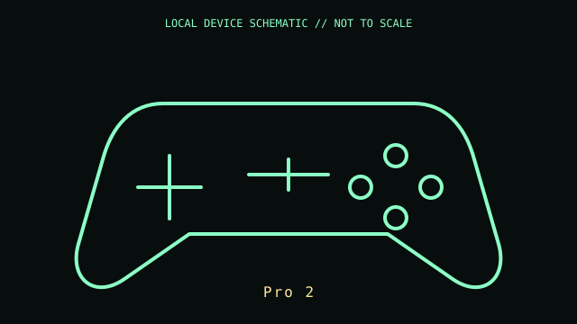

[ GAME CONTROLLERS // IDENTIFIED COMPONENT ]
8BitDo Pro 2 Bluetooth Controller
Multi-platform gamepad with rear paddles, profile controls, and a physical mode selector.

MODEL IDENTIFICATION: Manufacturer identity: Pro 2. Compare the unit label, regional suffix, and revision against the manufacturer's manual before repair or compatibility claims.
Model specifications
| Catalog subcategory | Game controllers |
|---|---|
| Exact model / ID | Pro 2 |
| Model-specific features | Bluetooth wireless and USB-C wired operation; two programmable rear buttons; profile switch; vibration and motion functions vary by selected platform mode. |
| Interface and host support | Controller mode determines the host protocol (including XInput, DInput, Switch, or macOS modes on supported versions). Ultimate Software remapping and firmware are version-specific. |
| Revision / driver caveat | The Pro 2 has hardware and platform-specific revisions; read the label and verify the mode selector/firmware before relying on mappings. Motion control availability is platform-dependent. |
Preservation and service notes
Use the specified rechargeable or AA battery arrangement for the revision in hand. Preserve the USB-C cable and mode/firmware settings; inspect rear paddle mechanisms and battery contacts.
Record the as-found label, accessories, host OS, driver/firmware version, and test method. Separate observed condition from published specifications; do not treat family-level feature claims as proof of a unit's revision.
Primary manufacturer documentation
- 8BitDo Pro 2 product pageManufacturer feature and platform-mode overview.
- 8BitDo Pro 2 support and manualManufacturer connection, mode, software, firmware, and troubleshooting instructions.
Manufacturer pages may change or retire. Preserve a copy of the applicable manual and note its revision when documenting a physical unit.